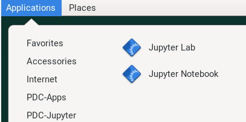
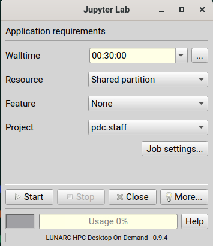
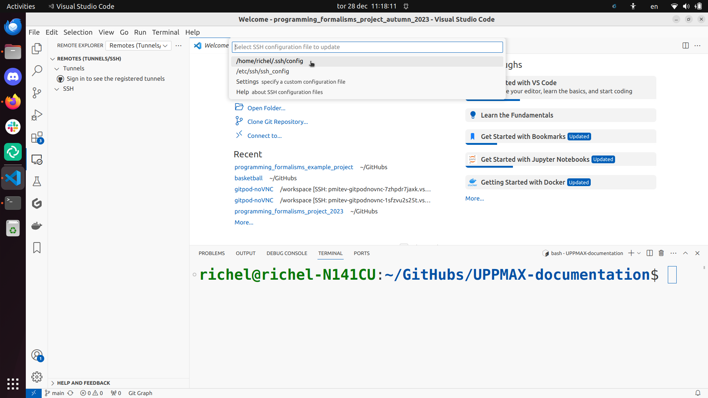

Jupyter is web application that (among other things) allows literature programming for Python. That is, Jupyter allows to create documents where Python code is shown and run and its results shown, surrounded by written text (e.g. English).
Additionally, Jupyter allows to share files and hence includes a file manager.
started and run on a server, for example, an interactive node
displayed in a web browser, such as firefox.
Jupyter can be slow when using a remote desktop website (e.g. pelle-gui.uppmax.uu.se or kebnekaise-tl.hpc2n.umu.se).
Local notes
You can start Thinlinc and run Jupyter on a login node, or use a browser on your local computer with SSH tunneling which could be faster.
One can use a locally installed ThinLinc client to speed up Jupyter. See the UPPMAX documentation on ThinLinc on how to install the ThinLinc client locally
JupyterLab is only accessible from within HPC2N’s domain, and there is no way to improve any slowness
Better use OnDemand!
You can run Jupyter either in compute nodes through Anaconda or through the LUNARC HPC desktop. The latter is recommended.
It will show some text, including telling you to open a url in a browser (inside ThinLinc/on Tetralith). If you just wait, it will open a browser with Jupyter.
It will look similar to this:
Webbrowser view
On your own computer through SSH tunneling
Either do a regular SSH or use ThinLinc to connect to tetralith (change to your own username):
sshx_abcde@tetralith.nsc.liu.se
Change to your working directory
cd<my-workdir>
Load a module with JupyterLab in (here JupyterLab 4.2.0)
Now grab the line that is similar to the one I marked in 4. and which has the same port as you used in 5.
Input that line (url with token) in a browser on your local machine. You wil get something similar to this:
Webbrowser view
You can interactively launch Jupyter Lab and Notebook on Dardel by following the steps as below. Hopefully the ThinLinc licenses are sufficient!
Click on Applications -> PDC-Jupyter -> Jupyter Lab or Jupyter Notebook
Desktop view

Configure your job parameters in the dialog box.
GfxLauncher view

Click Start, wait for the job to start and in few seconds a firefox browser will open with Jupyter Lab or Notebook session. If you close the firefox browser, you can connect to same Jupyter session again by clicking ‘Reconnect to Lab’.
GfxLauncher view
1. Login to a remote desktop
Alt1. Login to the remote desktop website at pelle-gui.uppmax.uu.se
Alt2. Login to your local ThinLinc client at pelle-gui.uppmax.uu.se
Login to the remote desktop website at bianca.uppmax.uu.se
2. start an interactive session
Start a terminal on the remote desktop. Within that terminal, start an interactive session from the login node (change to the correct NAISS project ID)
$interactive-Auppmax2025-2-393-t1:00:00
$interactive-A<proj>-t1:00:00
3. start Jupyter in the interactive session
Within your terminal with the interactive session, load a modern Python module:
$mlJupyterLab/4.2.5-GCCcore-13.3.0
Then, start jupyter-lab :
jupyter-lab--ip0.0.0.0--no-browser
This will start a jupyter server session so leave this terminal open. The terminal will also display multiple URLs.
Copy the URL containing pXXX
moduleloadpython/3.11.8
Then, start jupyter-notebook (or jupyter-lab):
jupyter-notebook--ip0.0.0.0--no-browser
This will start a jupyter server session so leave this terminal open. The terminal will also display multiple URLs.
Copy the URL containing sensXXXXXXX
4. Connect to the running Jupyter server
On ThinLinc
Start firefox from menu of ThinLinc.
browse to the URLs, which will be similar to http://p115.uppmax.uu.se:8888/lab?token=73178b5ec897ae9bed6ae4b1815137d83dff671562574989
Paste the url and it will start the Jupyter interface on ThinLinc and all calculations and files will be on Pelle.
Browse to the URLs, which will be similar to http://sens2017625-b9.uppmax.uu.se:8888/tree?token=002be4f71fe1b8dd95c0024de24af08b700cdefdf4b977c4
Paste the url and it will start the Jupyter interface on ThinLinc and all calculations and files will be on Bianca.
On own computer Only Pelle
If you want to connect to the Jupyter server running on Pelle from your own computer, you can do this by using SSH tunneling. Which means forwarding the port of the interactive node to your local computer.
On Linux or Mac this is done by running in another terminal. Replace p115 with the actual node number you got in step 3. Make sure you have the ports changed if they are not at the default 8888.
$ssh-L8888:p115:8888<username>@pelle.uppmax.uu.se
If you use Windows it may be better to do this in the PowerShell instead of a WSL2 terminal.
If you use PuTTY - you need to change the settings in “Tunnels” accordingly (could be done for the current connection as well).
On your computer open the URL you got from step 3. on your webbrowser but replace p115 with localhost i.e. you get something like this
http://localhost:8888/lab?token=73178b5ec897ae9bed6ae4b1815137d83dff671562574989
or
http://127.0.0.1:8888/lab?token=73178b5ec897ae9bed6ae4b1815137d83dff671562574989
This should bring the jupyter interface on your computer and all calculations and files will be on Pelle.
Warning
Running Jupyter in a virtual environment
You could also use jupyter (-lab or -notebook) in a virtual environment.
If you decide to use the –system-site-packages configuration you will get jupyter from the python modules you created your virtual environment with.
However, you won’t find your locally installed packages from that jupyter session. To solve this reinstall jupyter within the virtual environment by force:
$ pipinstall-Ijupyter
and run:
$ jupyter-notebook
Be sure to start the kernel with the virtual environment name, like “Example”, and not “Python 3 (ipykernel)”.
Since the JupyterLab will only be accessible from within HPC2N’s domain, it is by far easiest to do this from inside ThinLinc, so this is highly recommended. You can find information about using ThinLinc at HPC2N’s documentation
1. Check JupyterLab version
At HPC2N, you currently need to start JupyterLab on a specific compute node. To do that you need a submit file and inside that you load the JupyterLab module and its prerequisites (and possibly other Python modules if you need them - more about that later).
To see the currently available versions, do:
$ modulespiderJupyterLab
You then do:
$ modulespiderJupyterLab/<version>
for a specific <version> to see which prerequisites should be loaded first.
Example, loading JupyterLab/4.0.5
$ moduleloadGCC/12.3.0JupyterLab/4.0.5
2. Start Jupyter on the compute node
Make a submit file with the following content. You can use any text editor you like, e.g. nano or vim.
Something like the file below will work. Remember to change the project id after the course, how many cores you need, and how long you want the JupyterLab to be available:
#!/bin/bash#SBATCH -A hpc2n2025-151# This example asks for 1 core#SBATCH -n 1# Ask for a suitable amount of time. Remember, this is the time the Jupyter notebook will be available! HHH:MM:SS.#SBATCH --time=05:00:00# Clear the environment from any previously loaded modules
modulepurge>/dev/null2>&1# Load the module environment suitable for the job
moduleloadGCC/12.3.0JupyterLab/4.0.5
# Start JupyterLab
jupyterlab--no-browser--ip$(hostname)
Where the flags used to the Jupyter command has the following meaning (you can use Jupyter--help and Jupyterlab--help> to see extra options):
lab: This launches JupyterLab computational environment for Jupyter.
- -no-browser: Prevent the opening of the default url in the browser.
- -ip=<IP address>: The IP address the JupyterLab server will listen on. Default is ‘localhost’. In the above example script I use $(hostname) to get the content of the environment variable for the hostname for the node I am allocated by the job.
Note again that the JupyterLab is only accessible from within the HPC2N domain, so it is easiest to work on the ThinLinc.
Submit the above submit file. Here I am calling it MyJupyterLab.sh
$ sbatchMyJupyterLab.sh
3. Connect to the running Jupyter server
Wait until the job gets resources allocated. Check the SLURM output file; when the job has resources allocated it will have a number of URLs inside at the bottom.
The SLURM output file is as default named slurm-<job-id>.out where you get the <job-id> when you submit the SLURM submit file (from previous step).
NOTE: Grab the URL with the hostname since the localhost one requires you to login to the compute node and so will not work!
The file will look similar to this:
slurm-<job-id>.out
b-an03 [~]$ cat slurm-24661064.out[I 2024-03-09 15:35:30.595 ServerApp] Package jupyterlab took 0.0000s to import[I 2024-03-09 15:35:30.617 ServerApp] Package jupyter_lsp took 0.0217s to import[W 2024-03-09 15:35:30.617 ServerApp] A `_jupyter_server_extension_points` function was not found in jupyter_lsp. Instead, a `_jupyter_server_extension_paths` function was found and will be used for now. This function name will be deprecated in future releases of Jupyter Server.[I 2024-03-09 15:35:30.626 ServerApp] Package jupyter_server_terminals took 0.0087s to import[I 2024-03-09 15:35:30.627 ServerApp] Package notebook_shim took 0.0000s to import[W 2024-03-09 15:35:30.627 ServerApp] A `_jupyter_server_extension_points` function was not found in notebook_shim. Instead, a `_jupyter_server_extension_paths` function was found and will be used for now. This function name will be deprecated in future releases of Jupyter Server.[I 2024-03-09 15:35:30.627 ServerApp] jupyter_lsp | extension was successfully linked.[I 2024-03-09 15:35:30.632 ServerApp] jupyter_server_terminals | extension was successfully linked.[I 2024-03-09 15:35:30.637 ServerApp] jupyterlab | extension was successfully linked.[I 2024-03-09 15:35:30.995 ServerApp] notebook_shim | extension was successfully linked.[I 2024-03-09 15:35:31.020 ServerApp] notebook_shim | extension was successfully loaded.[I 2024-03-09 15:35:31.022 ServerApp] jupyter_lsp | extension was successfully loaded.[I 2024-03-09 15:35:31.023 ServerApp] jupyter_server_terminals | extension was successfully loaded.[I 2024-03-09 15:35:31.027 LabApp] JupyterLab extension loaded from /hpc2n/eb/software/JupyterLab/4.0.5-GCCcore-12.3.0/lib/python3.11/site-packages/jupyterlab[I 2024-03-09 15:35:31.027 LabApp] JupyterLab application directory is /cvmfs/ebsw.hpc2n.umu.se/amd64_ubuntu2004_skx/software/JupyterLab/4.0.5-GCCcore-12.3.0/share/jupyter/lab[I 2024-03-09 15:35:31.028 LabApp] Extension Manager is 'pypi'.[I 2024-03-09 15:35:31.029 ServerApp] jupyterlab | extension was successfully loaded.[I 2024-03-09 15:35:31.030 ServerApp] Serving notebooks from local directory: /pfs/stor10/users/home/b/bbrydsoe[I 2024-03-09 15:35:31.030 ServerApp] Jupyter Server 2.7.2 is running at:[I 2024-03-09 15:35:31.030 ServerApp] http://b-cn1520.hpc2n.umu.se:8888/lab?token=c45b36c6f22322c4cb1e037e046ec33da94506004aa137c1[I 2024-03-09 15:35:31.030 ServerApp] http://127.0.0.1:8888/lab?token=c45b36c6f22322c4cb1e037e046ec33da94506004aa137c1[I 2024-03-09 15:35:31.030 ServerApp] Use Control-C to stop this server and shut down all kernels (twice to skip confirmation).[C 2024-03-09 15:35:31.039 ServerApp]To access the server, open this file in a browser: file:///pfs/stor10/users/home/b/bbrydsoe/.local/share/jupyter/runtime/jpserver-121683-open.htmlOr copy and paste one of these URLs: http://b-cn1520.hpc2n.umu.se:8888/lab?token=c45b36c6f22322c4cb1e037e046ec33da94506004aa137c1 http://127.0.0.1:8888/lab?token=c45b36c6f22322c4cb1e037e046ec33da94506004aa137c1[I 2024-03-09 15:35:31.078 ServerApp] Skipped non-installed server(s): bash-language-server, dockerfile-language-server-nodejs, javascript-typescript-langserver, jedi-language-server, julia-language-server, pyright, python-language-server, python-lsp-server, r-languageserver, sql-language-server, texlab, typescript-language-server, unified-language-server, vscode-css-languageserver-bin, vscode-html-languageserver-bin, vscode-json-languageserver-bin, yaml-language-server
To access the server, go to file:///.local/share/jupyter/runtime/jpserver-<newest>-open.html from a browser within the ThinLinc session. <newest> is a number that you find by looking in the directory .local/share/jupyter/runtime/ under your home directory.
Or, to access the server you can copy and paste the URL from the file that is SIMILAR to this: http://b-cn1520.hpc2n.umu.se:8888/lab?token=c45b36c6f22322c4cb1e037e046ec33da94506004aa137c1
NOTE of course, do not copy the above, but the similar looking one from the file you get from running the batch script!!!
Webbrowser view
Start a webbrowser within HPC2N (ThinLinc interface). Open the html or put in the URL you grabbed, including the token:
After a few moments JupyterLab starts up:
You shut it down from the menu with “File” > “Shut Down”
For the course:
If you want to start a Jupyter with access to matplotlib and seaborn, for use with this course for the session on matplotlib, then do the following:
3.1. Start ThinLinc and login to HPC2N as described under preparations
#!/bin/bash
#SBATCH -A hpc2n2025-151
# This example asks for 1 core
#SBATCH -n 1
# Ask for a suitable amount of time. Remember, this is the time the Jupyter notebook will be available! HHH:MM:SS.
#SBATCH --time=05:00:00
# Clear the environment from any previously loaded modules
module purge > /dev/null 2>&1
# Load the module environment suitable for the job
module load GCC/12.3.0 Python/3.11.3 OpenMPI/4.1.5 SciPy-bundle/2023.07 matplotlib/3.7.2 Seaborn/0.13.2 JupyterLab/4.0.5
# Start JupyterLab
jupyter lab --no-browser --ip $(hostname)
3.4. Get the URL from the SLURM output file slurm-<job-id>.out.
It will be SIMILAR to this : http://b-cn1520.hpc2n.umu.se:8888/lab?token=c45b36c6f22322c4cb1e037e046ec33da94506004aa137c1
3.5. Open a browser inside ThinLinc and put in the URL similar to above.
You can interactively launch Jupyter Lab and Notebook on COSMOS by following the steps as below:
Click on Applications -> Applications - Python -> Jupyter Lab (CPU) or Jupyter Notebook (CPU)
Desktop view
Configure your job parameters in the dialog box.
GfxLauncher view
Click Start, wait for the job to start and in few seconds a firefox browser will open with Jupyter Lab or Notebook session. If you close the firefox browser, you can connect to same Jupyter session again by clicking ‘Reconnect to Lab’.
Spyder is a powerful and flexible IDE originally developed to be the main scripting environment for scientific Anaconda users. It is designed to enable quick and easily repeatable experimentation, with automatic syntax checking, auto-complete suggestions, a runtime variable browser, and a graphics window that makes plots easy to manipulate after creation without additional code.
ml condaexport CONDA_PKG_DIRS=/proj/hpc-python-uppmax/$USERexport CONDA_ENVS_PATH=/proj/hpc-python-uppmax/$USERsource activate spyder-env
you can install packages with pip install from inside Spyder
On COSMOS, the recommended way to use Spyder is to use the On-Demand version in the Applications menu, under Applications-Python.
All compatible packages should be configured to load upon launching, so you should only have to specify walltime and maybe a few extra resource settings with the GfxLauncher so that spyder will run on the compute nodes.
Avoid launching Spyder from the command line on the login node.
The only available version of Spyder on Kebnekaise is Spyder/4.1.5 for Python-3.8.2 (the latest release of Spyder available for users to install in their own environments is 6.0.2).
Python 3.8.2 is associated with compatible versions of Matplotlib and Pandas, but not Seaborn or any of the ML packages to be covered later.
To run the available version of Spyder, run the following commands:
ml GCC/9.3.0 OpenMPI/4.0.3 Python Spyderspyder3
If you want a newer version with more and newer compatible Python packages, you will have to create a virtual environment.
VS Code is a powerful and flexible IDE that is popular among developers for its ease of use and flexibility. It is designed to be a lightweight and fast editor that can be customized to suit the user’s needs. It has a built-in terminal, debugger, and Git integration, and can be extended with a wide range of plugins.
VS Code can be downloaded and installed on your local machine from the VS Code website. It is also available on the HPC center resources, but the installation process is different for each center.
However, VS Code is best used on your local machine, as it is a resource-intensive application that can slow down the ThinLinc interface. The VS Code Server can be installed on all the HPCs that give your the ability to run your code on the HPCs but edit it on your local machine.
Similarly, you can also install your faviroute extensions on the HPCs and use them on your local machine. Care should be taken while assigning the correct installation directories for the extensions because otherwise they get installed in home directory and eat up all the space.
Install VS Code on your local machine and follow the steps below to connect to the HPC center resources.
Steps to connect VS Code via SSH
Since most now has added the TOTP feature you have to make another setting as well.
Go to settings (the lower-left corner wheel):
Search for the right setting and enable it.
Find and click the “Remote explorer” button in the left-hand side menu.
First time connection
Type ssh [username]@<cluster address> where [username] is your cluster username, for example, ssh sven@tetralith.uppmax.uu.se.
This will change as per the HPC center you are using:
Use the ~/.ssh/config file:

Click on “Connect”
When you first establish the ssh connection to the cluster, your VSCode server directory .vscode-server will be created in your home folder /home/[username].
This also where VS Code will install all your extensions that can quickly fill up your home directory.